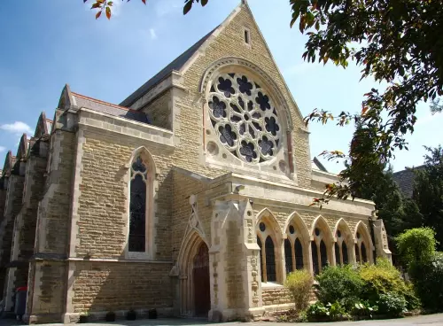

Community · 5 September
Residents plan a “meet your neighbours” Saturday

What's happening
A drop-in afternoon is bringing local groups, clubs and residents together around Tally Ho Corner.
Why it matters
The idea is a low-key way for people who are new to the area — or who simply haven't crossed paths yet — to meet neighbours and find out what's already going on nearby.
The detail
A handful of local clubs and community groups are expected to bring a table or stall, with residents encouraged to drop in for as long or as short a time as suits them. Tea, coffee and a small bake sale are planned to help cover costs.
The event is being organised informally by residents rather than any single organisation, so timings and the exact meeting point may be confirmed closer to the date via local noticeboards.
Back to local news